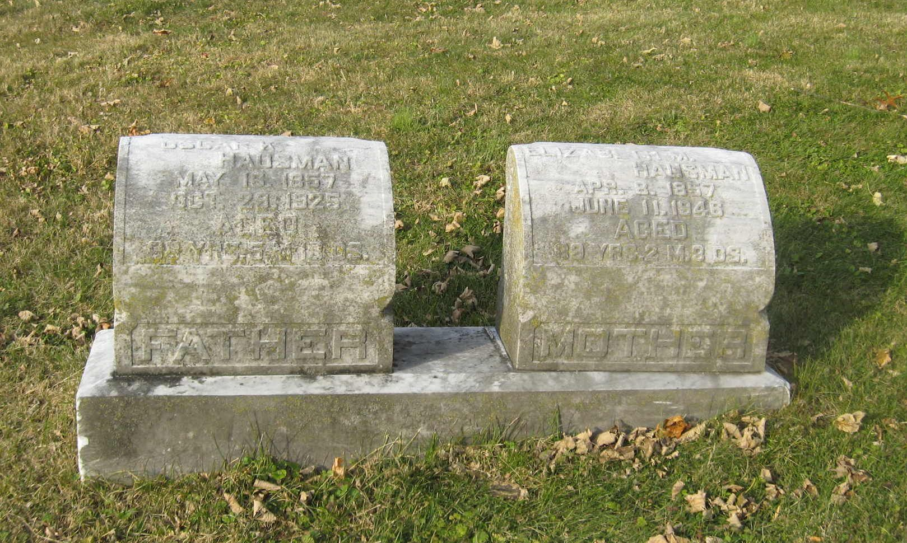

Oscar Keller HAUSMAN
born 16 May 1857
died 29 Oct 1925
Elizabeth "Lizzie" Moyer WEISS
born 08 Apr 1857
died 11 Jun 1946
(maternal grandparents of Titus Hartman)
married 28 Jan 1882
Morris Weiss HAUSMAN
born 12 Aug 1882
died 19 Sep 1964
Edward Weiss HAUSMAN
born 03 Jan 1890
died 1965
Jacob Weiss HAUSMAN
born 12 Aug 1893
died 1989
Lizzie Weiss HAUSMAN
born 22 Jun 1896
died Mar 1976
Oscar and Elizabeth are buried together at Fairview Cemetery in Boyertown, PA.
